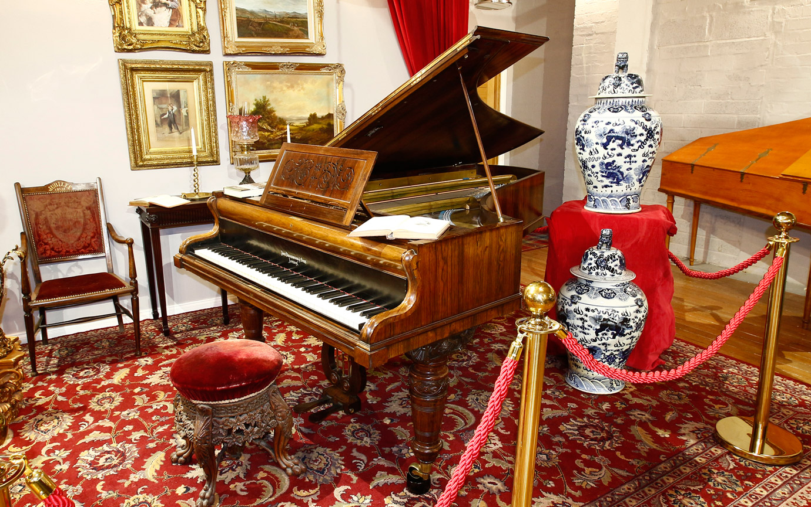

| John Broadwood & Sons is the oldest and one of the most prestigious piano companies in the world. The instruments have been enjoyed by such famous people as Mozart, Haydn, Chopin, Beethoven and Liszt. Broadwood now offers a comprehensive range of high quality hand built instruments in various styles to order, and also a tuning and restoration service. |  |
| This site is currently under development: last update 23-01-25 |
| John Broadwood & Sons Pianos J & J Hopkinson Pianos History |
| Broadwood Archive Services George Rogers & Sons Pianos |